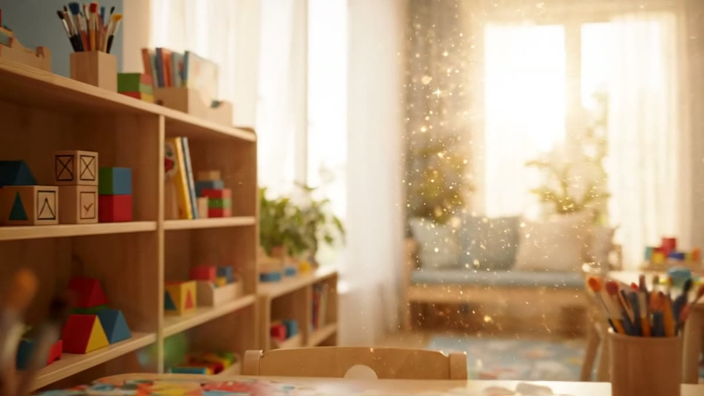
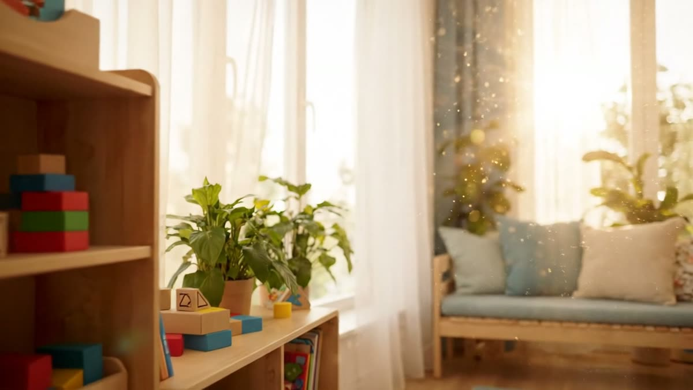

Primii pași într-un mediu sigur
Acomodare blândă și graduală, în strânsă colaborare cu părinții. Jocuri senzoriale, muzică și multă afecțiune pentru o dezvoltare armonioasă încă din primele luni.
Creșă & grădiniță privată în Pitești
Un mediu cald, sigur și luminos, în care cei mici descoperă lumea în ritmul lor — de la 6 luni la 6 ani.
Despre creșa noastră
Suntem o creșă privată în Pitești gândită pentru părinții care își doresc mai mult decât o simplă supraveghere. Construim zilnic un mediu calm și prietenos, în care fiecare copil primește atenție individuală și sprijinul de care are nevoie pentru a se dezvolta frumos. Pregătim totodată trecerea firească spre grădiniță privată în Pitești, pas cu pas.
Acomodare blândă și graduală, în strânsă colaborare cu părinții. Jocuri senzoriale, muzică și multă afecțiune pentru o dezvoltare armonioasă încă din primele luni.
Încurajăm curiozitatea naturală prin activități adaptate vârstei. Cei mici învață să mănânce singuri, să își exprime nevoile și să interacționeze cu ceilalți copii.
Activități și jocuri care dezvoltă limbajul, creativitatea și colaborarea. Pregătim cu calm și bucurie trecerea către grupa de grădiniță.

Metoda educațională
Credem că fiecare copil învață diferit și are propriul ritm. Activitățile noastre sunt inspirate din principiile Montessori și transformă curiozitatea naturală într-o bucurie de a descoperi — dezvoltând nu doar cunoștințe, ci și încredere, creativitate și dorința de a învăța.
Fiecare activitate transformă curiozitatea în experiențe care îi ajută pe copii să înțeleagă lumea.
Îi încurajăm să ia inițiativă, să facă alegeri și să își dezvolte independența, treaptă cu treaptă.
Învață să își recunoască emoțiile și să construiască relații bazate pe empatie și respect.
Prin activități de grup, copiii învață să colaboreze, să împartă și să se respecte reciproc.
Artă, muzică și jocuri imaginative care stimulează exprimarea liberă și imaginația.
Experimente și descoperirea naturii — învățare prin observare, atingere și experiment.
Experiența de zi cu zi
Derulează pentru a păși prin spațiile noastre.
Alimentație & siguranță
Alimentația și mediul în care crește copilul influențează dezvoltarea lui. De aceea pregătim zilnic mese proaspete în bucătăria proprie și oferim un spațiu sigur, atent organizat.
Toate preparatele sunt gătite zilnic, proaspăt, din ingrediente atent selecționate.
Fără zahăr adăugat, coloranți sau aditivi. Alegem produse proaspete și, când e posibil, bio.
Concepute de un nutriționist și avizate de un medic pediatru, adaptate fiecărei vârste.

Educație & program
Programul zilnic este atent organizat pentru a îmbina educația, joaca, odihna și mesele sănătoase — respectând ritmul fiecărui copil. Program: Luni – Vineri, 07:30 – 18:00.
Întâmpinare caldă, jocuri libere și acomodare pentru o nouă zi.
Proaspăt, pregătit în bucătăria proprie, pentru un început plin de energie.
Activitate educațională adaptată temei săptămânii, prin metoda Montessori și joc.
De regulă fructe și legume proaspete, pentru energie până la prânz.
Meniu echilibrat, gătit zilnic, avizat de medic pediatru.
Somnul de prânz pentru refacerea energiei și dezvoltarea armonioasă.
O nouă gustare sănătoasă, din ingrediente atent alese.
Jocuri, ateliere creative și timp petrecut în aer liber.
Activități opționale
Pe lângă programul zilnic, copiii pot explora domenii noi, alese cu grijă pentru a completa dezvoltarea lor — într-un mediu sigur și plin de bucurie.
Inițiere timpurie în natație, pentru încredere, coordonare și un stil de viață activ.
Primul contact cu logica și mecanica digitală, prin joc și experimente practice.
Învățare naturală a limbii, prin cântece, povești și jocuri adaptate vârstei.
Atelier de pictură și creație senzorială care stimulează imaginația și exprimarea.
Mișcare, ritm și motricitate, pentru un corp sănătos și multă energie pozitivă.
Sprijin pentru dezvoltarea limbajului și o comunicare clară și încrezătoare.
Întrebări frecvente
Primim copii cu vârste între 6 luni și 6 ani, organizați în grupe mici, pe categorii de vârstă.
Da. Te încurajăm să programezi o vizită pentru a vedea spațiile și a afla toate detaliile de care ai nevoie.
Acomodarea este graduală, în ritmul fiecărui copil, cu o comunicare permanentă cu familia.
Toate mesele sunt gătite zilnic în bucătăria proprie, din ingrediente proaspete, după meniuri echilibrate avizate de un medic pediatru.
Adaptăm meniul în funcție de alergii, intoleranțe sau recomandări medicale, în colaborare cu familia.
Da, spațiile sunt monitorizate video permanent, pentru siguranța copiilor și liniștea părinților.
Contact
Programează o vizită sau sună-ne pentru orice întrebare despre înscriere, program și grupe.
Pitești, Argeș
Luni – Vineri, 07:30 – 18:00